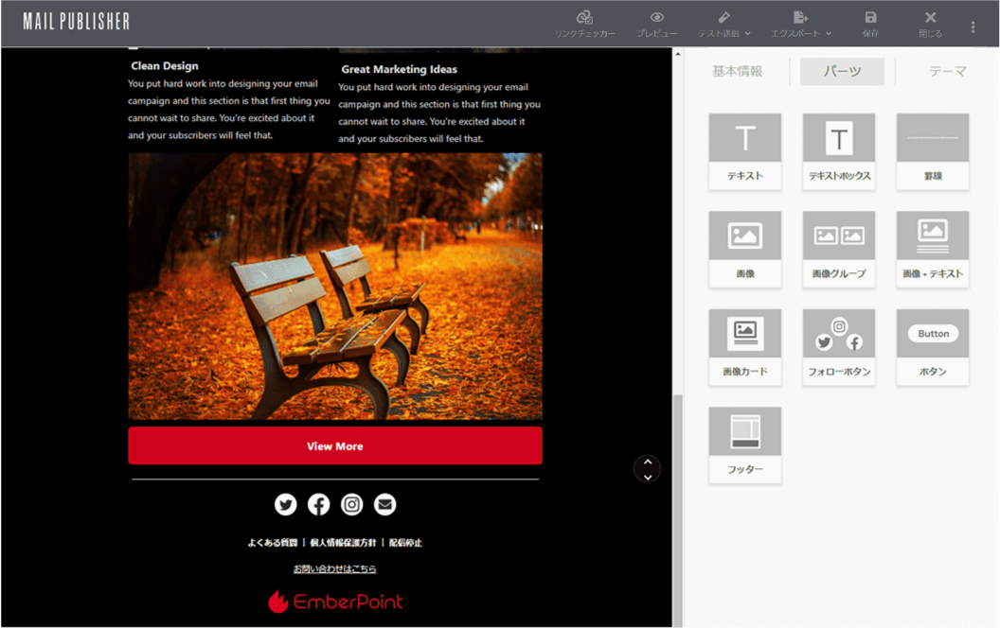
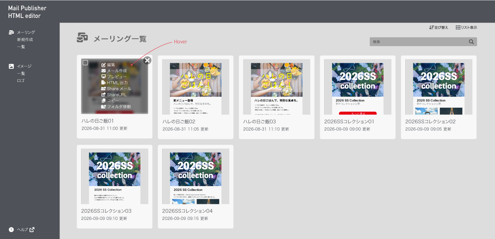

01 / PROJECT OVERVIEW
HTMLメール
エディタ
Mail Publisher HTML editor
HTMLの知識がなくても直感的にメールを作成できる、 HTMLメールエディタのUIデザインと フロントエンド実装の一部を担当しました。

02 / BACKGROUND
使いにくかった既存エディタを、
直感的に使えるUIへ。
既存のエディタは編集の自由度が低く、 HTMLの知識がないユーザーにとって 扱いづらいことが課題でした。
そこで、専門知識がなくても メールを作成できるよう、 直感的な操作を重視したUIへ刷新しました。
03 / DESIGN
迷わず操作できる、見慣れたUIを目指して。
既存サービスの操作性を改善するため、ユーザーが直感的に使えるUIを目指しました。
一般的なメール作成ツールの操作感を参考に、機能の見つけやすさと使いやすさを意識して設計しました。
ドラッグ＆ドロップで、直感的にメールを作成
テキストや画像などのパーツをカード形式で一覧表示し、 ドラッグ＆ドロップで配置できるUIを設計しました。 HTMLを直接編集する必要がなく、 必要なパーツを選んで組み合わせることで、 専門知識のないユーザーでも視覚的にメールを作成できるようにしました。
出典：Mail Publisher 公式紹介動画（0:23〜0:35）
テンプレートを選び、すぐに編集を開始できるUI
テンプレート一覧では、各カードにカーソルを合わせることで 操作メニューを表示するUIを設計しました。 編集やプレビューなど、目的の操作へ直接アクセスできるようにしました。

04 / IMPLEMENTATION
UIデザインから、
画面実装まで。
Adobe XDでの画面設計・プロトタイプ制作に加え、 HTML/CSSやVue.jsを用いた一部画面のUI実装も担当しました。
開発メンバーと連携しながら、 デザインで意図したレイアウトや操作性を 実際の画面に反映しました。
05 / RESULT
専門知識がなくても、
使いやすい編集画面へ。
従来のエディタが抱えていた操作性の課題に対し、 見慣れたUIや直感的な操作方法を取り入れた編集画面を制作しました。
画面設計から一部の実装まで携わり、 HTMLの知識がないユーザーでもメールを作成しやすいUIの実現に取り組みました。